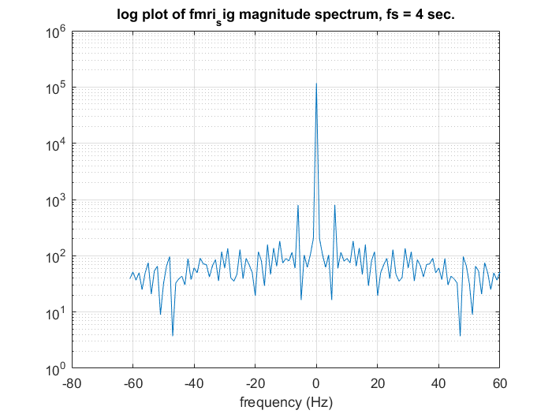
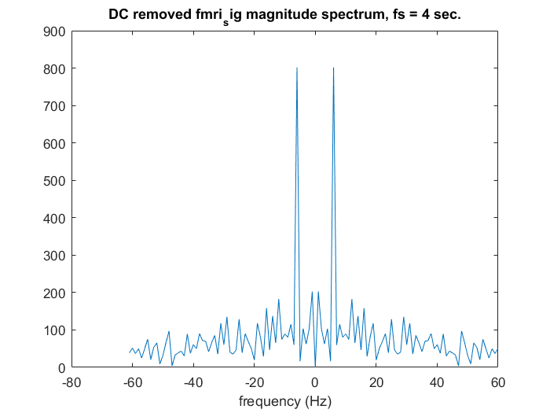
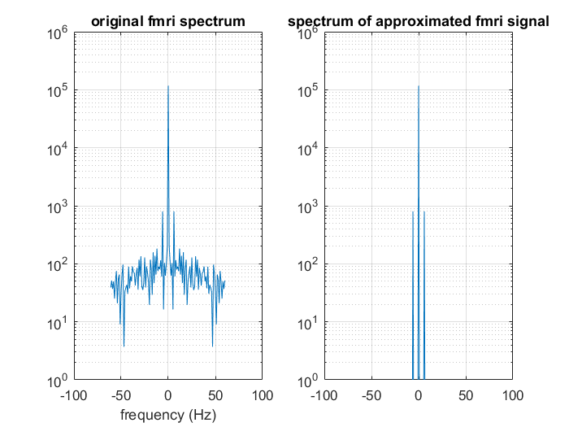
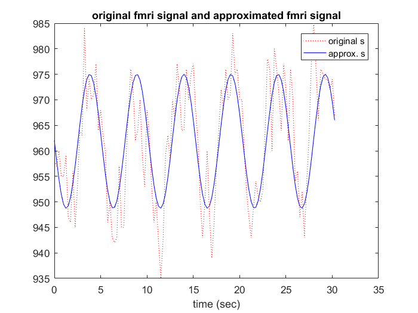

Matt Bachmeier
Lab05.2 ECE 203
Contents
Section 4.3 part a
Write Matlab code to perform the following tasks: 1. load fmri signal file fmri_sig.mat. The variable name is s. Find the length of s, N
*** enter your code here to load the signal and find N
clc clear all; close all; % clear the working memory and close all figure windows load fmrisig.mat N = length(s); % 2. This signal is sampled at fs = 4 Hz. Generate the frequency axis "freq" % that extends from -floor( N/2 ) : N - 1 - floor( N/2 ) using analog frequency Hz as % unit. Compute DFT of s, S use fftshift to rearrange the spectral components. % Denote abs(S) as absS. fs = 4; % % ***** enter your code here to evaluate fre, S (after fftshift) and absS freq = -floor(N/2): N-1-floor(N/2); S = fftshift(fft(s)); absS = abs(S); % 3. plot absS vs freq using semilogy, turn on grid. Using title and label % as given. % % ***** enter your code here for the semilogy plot of "absS" vs "freq" figure, semilogy(freq,absS), grid on title(['log plot of fmri_sig magnitude spectrum, fs = ' int2str(fs) ' sec.']) xlabel('frequency (Hz)')
part b. part c.
Identify the dominant sinusoidal components Assuming a sampling rate of 4 samples/sec, what is the frequency (in Hz) of the dominant sinusoidal component?
Note that the DC component S(0) = sum(s) so if mean(s) is removed, the DFT of s will not have a DC component. This way, the dominante frequency will be more easy to be discovered. Below are some instructions for preparing the code:
1. remove mean of s, then compute its spectrum, call it SNoDC, and absolute value of the spectrum, call it absSNoDC.
*** enter your code here to produce absSNoDC
SNoDC = fftshift(fft(s - mean(s))); absSNoDC = abs(SNoDC); % 2. plot (not semilogy) of 'freq' vs 'absSNoDC.' figure % ***** enter your code here to plot 'absSNoDC' vs 'freq' plot(freq,absSNoDC); title(['DC removed fmri_sig magnitude spectrum, fs = ' int2str(fs) ' sec.']) xlabel('frequency (Hz)') % 3. Manually identify the frequencies of the peaks of the DC removed % spectrum % ****** Given answer here: the frequencies at the peaks are: -6 and 6 % 4. Find the frequencies corresponding to the maximumm value of absSNoDC, % denote it as maxval. Using matlab command "find" to find the indices of the % peaks in absSNoDC, denote them as 'kidx.' Then translate those indices into % frequencies in Hz, called 'fidx.' Finally, print only those positive % frequencies denoted by variable 'pfidx.' % Note that the index corrsponding % 0 Hz is floor(N/2)+1. % % ****** enter code here for maxval, kidx, fidx and pfidx maxval = max(absSNoDC); kidx = find(absSNoDC>=maxval,2); fidx = ((kidx - floor(N/2) - 1)/N)*fs; pfidx = max(fidx); fprintf('The dominant sinusoidal frequency is %g Hz\n',pfidx) fprintf('Its magnitude is %g\n',maxval) k0 = find(freq==0); fprintf('The DC magnitude is %g\n',absS(k0))
The dominant sinusoidal frequency is 0.196721 Hz Its magnitude is 801.813 The DC magnitude is 117349
Part d.
Find a good DC offset plus sinusoidal fit to the fMRI signal using the magnitude and phase of the DFT coeffcients associated with the dominant component. Plot and compare your fit with the raw data.
Note this task is not as easy as it looks. If we use the following formula, the result will not be correct since we use only absolute values of the complex amplitudes and hence miss out phase information.
sapp = (1/N)*(absS(k0)+maxval*cos(2*pi*pfidx/fs*[0:N-1]));
Instead, we borrow the complex amplitude values of the original (complex valued) spectrum S to form the approximated spectrum Sapp. Another caviar is that the frequency indices of S may have been shifted using fftshift. These include k0 and kidx. Thus, when Sapp is constructed, it needs to be fftshift before ifft to produce the time domain approximated signal sapp.
First construct Sapp to see if it gives the correct approximation of S with a DC component equal to S(k0) and two dominant sinusoids at kidx with complex amplitude equal to S(kidx). Note Sapp should have identical dimension as S. A trick is to initialize Sapp with a small random number at every frequency uniformly distributed over [0, 0.01]. To do so, we can use a Matlb function called 'rand.', see below.
Sapp = 1e-2*rand(size(S)); % this is initial value of Sapp % % ***** enter code here for approximated S, Sapp Sapp(k0) = S(k0); Sapp(kidx) = S(kidx); % plot Sapp and original S within the same range axis([-2 2 1 1e6]) figure subplot(1,2,1),semilogy(freq,absS),grid on v1=axis; title('original fmri spectrum'),xlabel('frequency (Hz)') subplot(1,2,2),semilogy(freq,abs(Sapp)) grid on, axis(v1) title('spectrum of approximated fmri signal') % Compute time domain approximated fmri signal using ifft and fftshift on % Sapp % % ***** enter the code here. sapp = ifft(fftshift(Sapp)); % plot approximated s and original s tidx=[0:N-1]/fs; % unit in second figure, plot(tidx,s,'r:',tidx,real(sapp),'b'), legend('original s','approx. s'), xlabel('time (sec)') title('original fmri signal and approximated fmri signal') 
Relating above results to FMRI
Next, you will use the results above to map neural activity in the brain using fMRI. In fMRI, a series of MRI brain images are collected over time. Because oxgenated and deoxygenated hemoglobin have slightly different magnetic characteristics, variations in the MRI intensity indicate areas of the brain with increased blood flow and hence neural activity. The main challenge in fMRI is reliably detecting neural activity at different spatial locations (pixels) in the brain. The signals are noisy and the variation in intensity due to activation is very subtle. Consequently, statistical signal detection methods are routinely used to derive an "activation" map; a 2-d binary image of active and non-active brain regions.
The objective of this problem is to develop an DFT-based procedure for producing an activation map. To get you started, start with the simple program fmri.m that inputs the images from the data file fmri.mat, both of which are available on the moodle page. The basic idea is the compute the DFT of each pixel's time signal, and then check/detect the presence of a peak at the frequency corresponding to the period of the activation signal. In this case, the person was periodically tapping their finger, as above, and a representative response from an activated pixel is given in fmri_sig.mat. In developing your brain-mapping scheme, address/consider the following issues:
load fmri data
(e.) Determine an appropriate threshold for deciding whether or not a pixel is active. Discuss how and why you selected a particular threshold.
Although some of these code have been developed in earlier part of this lab. We choose to repeat them here so that it is easy to follow. Thus we begin by clear the working memory and close all graph windows
clear all; close all; fs = 4; % samplling freuency = 4 hz load fmri.mat % contains 122 x 64 x 64 array called 'x', consisting of 122 MRI % brain images of 64 by 64 pixels collected at 4 Hz sampling rate % each image is 64x64 pixels % time-length of image sequence = 122/4 = 30.5 second % % default color map has 64 colors, so we scale x to have values from 0 to 63. normfactor = 63/max(x(:)); % x is a 3D array and imagesc cannot display such a data structure Reshape % will convert the data strucure to a 2D array. im = reshape(x(1,:,:),64,64); % DefaultBrain is the first fmri image with each pixel value between 1 and % 64. This variable DefaultBrain will be used in following analysis DefaultBrain = 1 + normfactor*im; image(DefaultBrain) % show animation: this segment of code will play an animation on how the % brain image varies over time. Later, our goal is to identify some pixels % that has most visible time variation pattern. This/these pixel(s) will be % called "activated" pixel(s) [imax,xmax,ymax] = size(x); for i=1:imax im = reshape(x(i,:,:),xmax,ymax); imagesc(im),title(['time = ' num2str(i/fs) ' sec']), pause(.1) end % In this part, we manipulate the color map so that the fmmri mage is gray % scale while activated pixels will be highlighted in red color. This is % just a nice trick for visualization. You do not need to know the details % at this time if you do not want to. % % create a color map with all grey and one red color grays = linspace(0,1,64)'; % generate 64-1 equally spaced subdivisions in [0, 1] % The vector size is 64 x 1. gray = [0 1/63 2/63 ... 62/63 1]' graymap = [grays grays grays]; % this is an index color map of 64 levels of gray newmap = [ graymap ; [ 1 0 0 ] ]; % Add 65th row for red colormap(newmap) % Now, we will focus on the time series corresonding to x(:,1,1) (the (1,1) % pixel. We will find its dominant sinusodial frequences kidx % first create the time series as follows s = x(:,1,1); % Then compute its magnitude spectrum but WITHOUT shifting the frequency % axis by N/2. Smag=abs(fft(s)); % Next, remove DC S(0) by setting first element of Smag to 0. Remember in % Matlab, array index begins with 1 instead of 0 Smag(1)=0; % Find the indices kidx where the magnitude spectrum reaches its maximum Smagmax=max(Smag); kidx = find(Smag==Smagmax); % % Above procedure may be repeated for each pixel of the fmri image % sequence. Our goal is to find those pixels whose maximum magnitude % spectrum are within certain percentage of a maximum value among all fmri % data points. % % For this purpose you are going to develop a matlab function ScanPixels: % function Decision = ScanPixels(fmriData,kidx,MagnitudeFraction,MaxFreqIndexDiff) % where fmriData is the entire 3D array x loaded earlier in this section. % kidx is the set of frequency indices of maximum magnitude spectrum corresponding % to the (1,1) pixel computed above. % An internal variable Maxfmri = maximum of all fmri data (entire 3D array) % should be evaluated. % MagnitudeFraction is a scaler in 0 to 1 that specifies the percentage of % the Maxfmri as a threshold to determine activated pixels. % % MaxFreqIndexDiff is a scalar such that if the frequency corresponding to % the maximum magnitude spectrum falls within the MaxFreqIndexDiff range, % AND the magnitude of the spectrum at that frequency is within the MagnitudeFraction % fraction of Maxfmri, then the pixel is deemed as activated. % % Decision is a matrix of the same dimension as one fmri image and contains % LOGICAL values of 0 or 1 (activated). for this, you need to initialize % this variable as follows: % Decision = false(xmax,ymax); % where [xmax, ymax] = dimension of a fmri image. % Also, the (i,j)th element of Decision is set by testing the logic % conditions: % (a) the k indices of the dominant sinusoids of (i,j) element's time % series is within MaxFreqIndexDiff of those of kidx % (b) the value of the corresponding Maximum Magnitude spectrum is no less % than MagnitudeFraction*Maxfmri % % ***** write ScanPixels.m and save into a separate m-file. Then type ScanPixels.m; % Now, test the ScanPixels function you wrote as follows: MagnitudeFraction = 0.5; % 50% MaxFreqIndexDiff = 0; % frequency must be identical to that of kidx brain = DefaultBrain; ActiveLocations = ScanPixels(x,kidx,MagnitudeFraction,MaxFreqIndexDiff); brain(ActiveLocations) = 65; % Set active locations to index to red in color map. image(brain); title(['MagFrac = ' num2str(MagnitudeFraction(i)) ', MaxFreqIndexDiff = ' ... num2str(MaxFreqIndexDiff)'] ) % fprintf('i = %3i\n',i) % pause % end fprintf('\n\nDone\n')
function Decision = ScanPixels(fmriData,kidx,MagnitudeFraction,MaxFreqIndexDiff)
Decision = false(64,64);
check = zeros(64,64);
for k = 1:64
for l = 1:64
S = fmriData(:,k,l);
Smag=abs(fft(S));
Smag(1)=0;
check(k,l) = max(Smag);
end
end
Maxfmri = max(check);
print(Maxfmri)
for m = 1:64
for n = 1:64
p = abs(fft(fmriData(:,m,n)));
p(1) = 0;
maxp = max(p);
index = find(p==maxp);
if index <= or(kidx - MaxFreqIndexDiff, kidx+MaxFreqIndexDiff)
if maxp >= MagnitudeFraction*Maxfmri
Decision(m,n) = true;
end
end
end
end
Error using checkArgsForHandleToPrint
Handle input argument contains nonhandle values.
Error in checkArgsForHandleToPrint
Error in print>LocalCreatePrintJob (line 216)
handles = checkArgsForHandleToPrint(0, varargin{:});
Error in print (line 38)
[pj, inputargs] = LocalCreatePrintJob(varargin{:});
Error in ScanPixels (line 14)
print(Maxfmri)
Error in Lab05Part2_instr_fmri (line 284)
ActiveLocations = ScanPixels(x,kidx,MagnitudeFraction,MaxFreqIndexDiff);